Strona jest dostępna na Githubie, liste planowanych rzeczy też tam znajdziecie a jej kod z perspektywy doświadczonej osoby jest pewnie tak rozjechany i nielogiczny, że szkoda gadać. Z moim postepem w nauce HTMLa i CSS'a strona będzie się ulepszać. Teraz nawet dodanie tych śmiesznych wycentrowanych ikonek niżej było wyzwaniem.